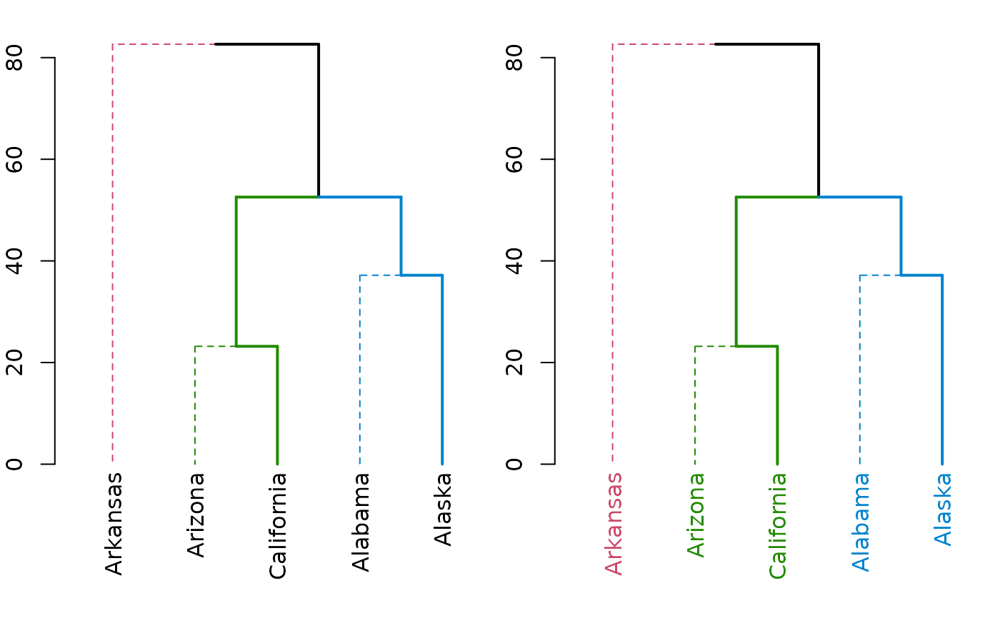

R/attr_access.R
get_leaves_branches_col.RdIt is useful to get the colors of branches of the leaves, after we use color_branches, so to then match the colors of the labels to that of the branches (since getting the colors of branches to match those of the labels can be tricky). This is based on get_leaves_branches_attr which is based on get_leaves_edgePar.
TODO: The function get_leaves_branches_col may behave oddly when extracting colors with missing col attributes when the lwd attribute is available. This may resolt in a vector with the wrong length (with omitted NA values). This might need to be fixed in the future, and attention should be given to this case.
get_leaves_branches_col(dend, ...)A vector with the dendrogram's leaves' branches' colors
# define dendrogram object to play with:
hc <- hclust(dist(USArrests[1:5, ]), "ave")
dend <- as.dendrogram(hc)
par(mfrow = c(1, 2), mar = c(5, 2, 1, 0))
dend <- dend %>%
color_branches(k = 3) %>%
set("branches_lwd", c(2, 1, 2)) %>%
set("branches_lty", c(1, 2, 1))
plot(dend)
labels_colors(dend) <- get_leaves_branches_col(dend)
plot(dend)
